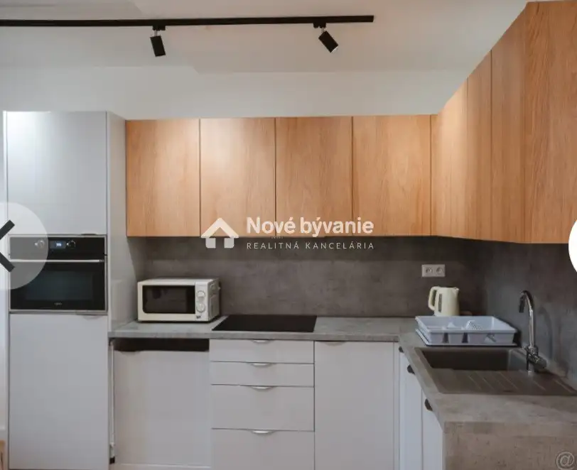
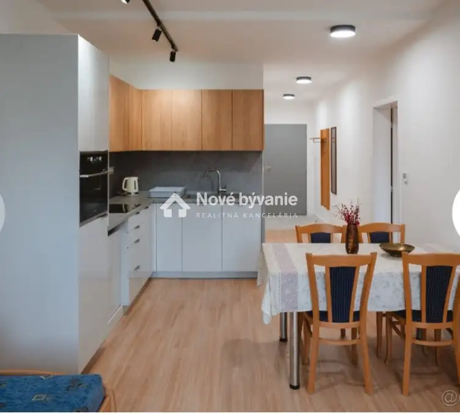
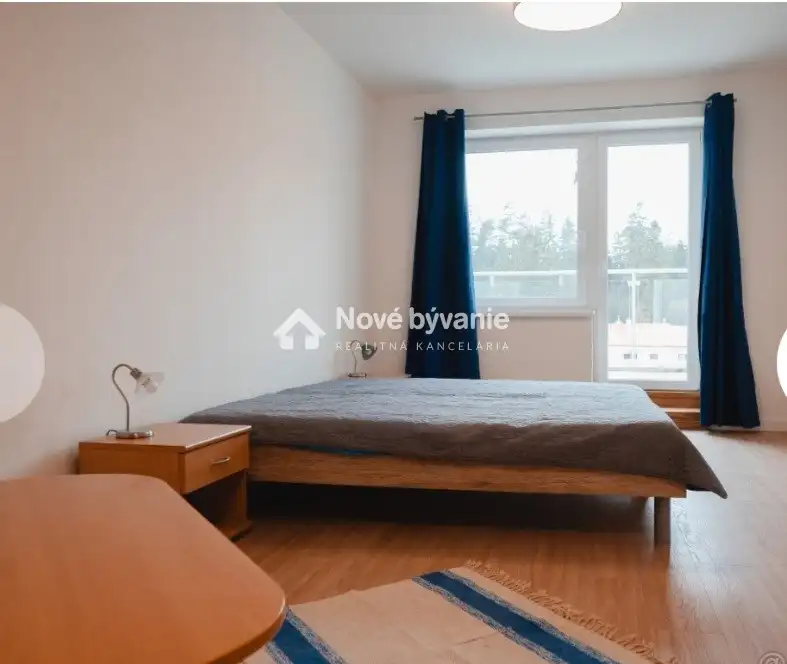
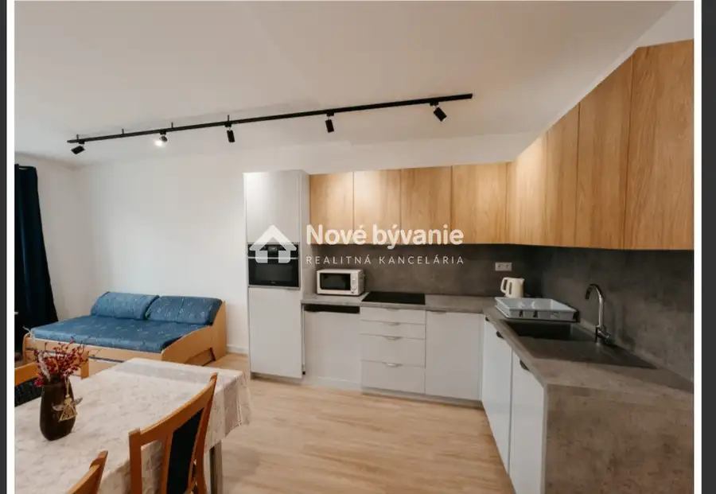
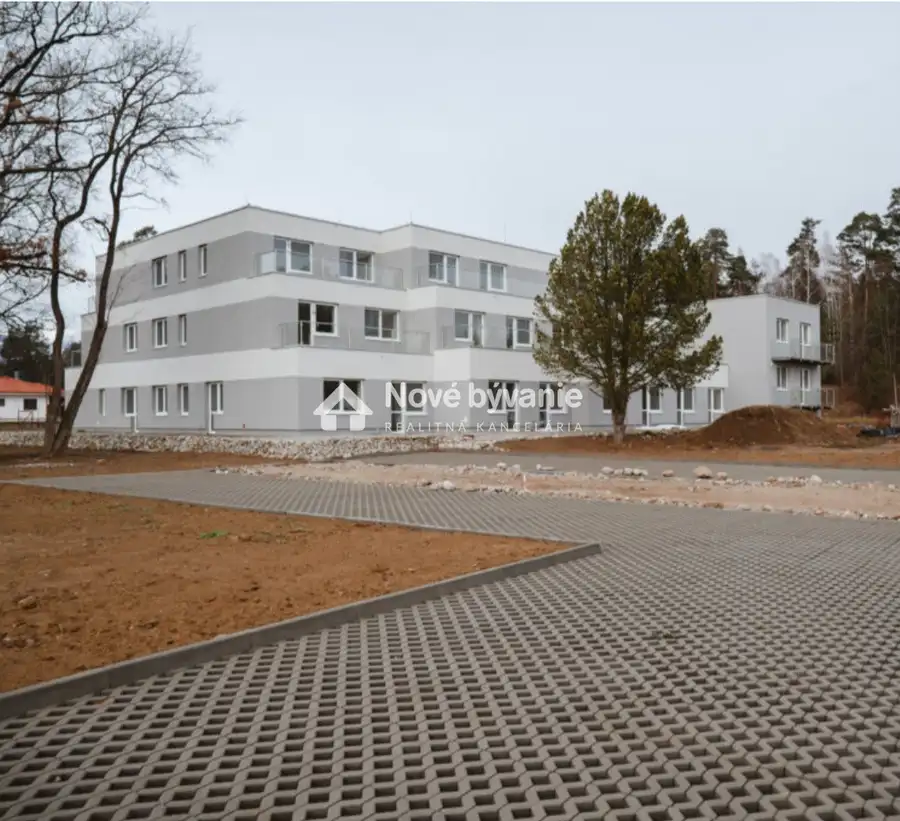
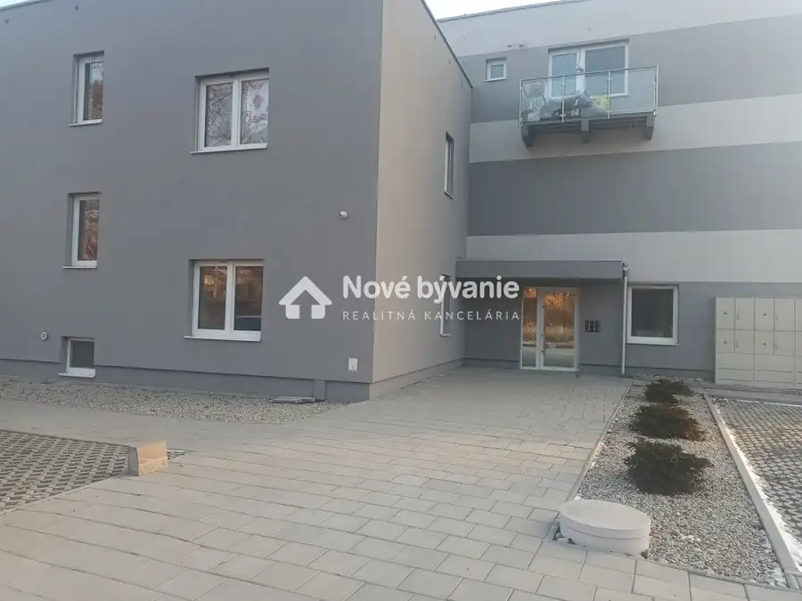
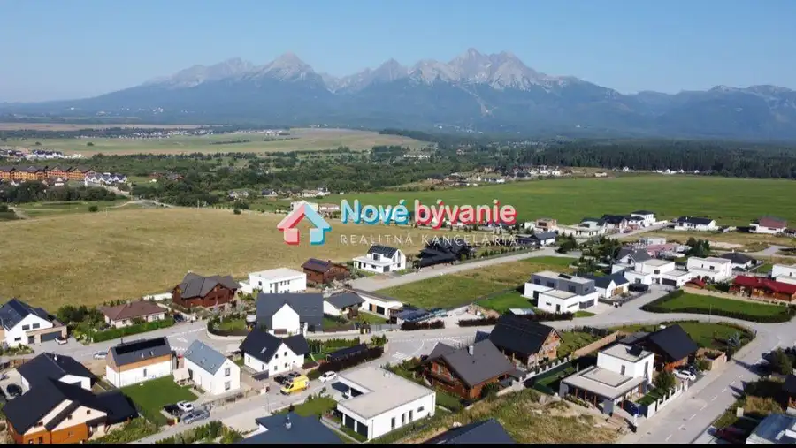
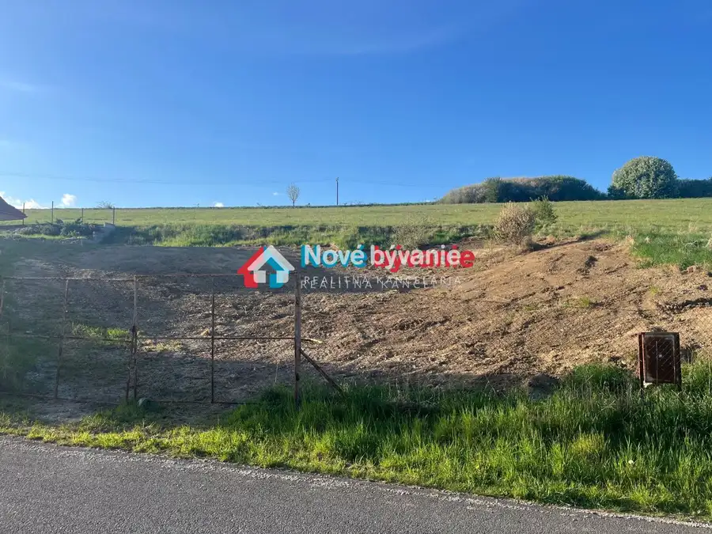
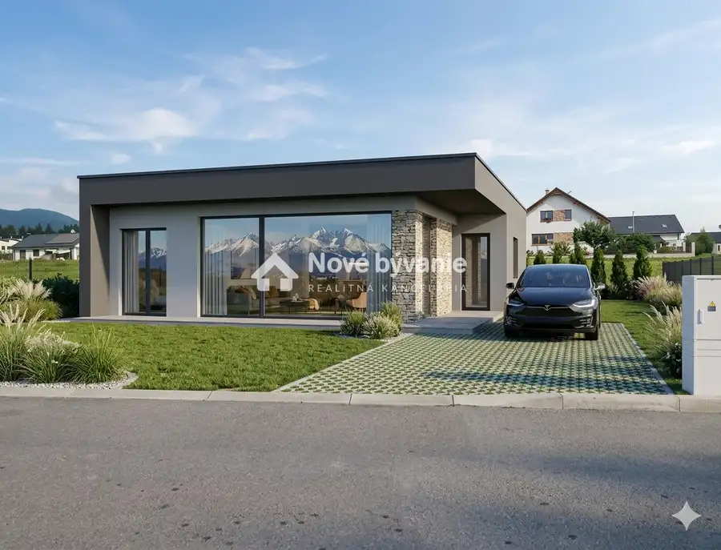

2 izbový byt vrátane park.statia, novostavba
Mlynčeky






- Dispozícia2-izbový
- Plocha57 m²
- StavNovostavba
- VlastníctvoFiremné
O nehnuteľnosti
N111-112-ERVE💰ZĽAVNENÁ CENA💰 . Ponúkame na predaj 2 izbovy byt s výhľadom na Vysoké Tatry v novostavbe v obci Mlynčeky len pár minút autom do Kežmarku.Byt sa predáva zariadený tak ako na fotkách a je ihneď k dispozícii ,čo je pre niekoho výhodou nakoľko v bytovom dorme sa predávajú holobyty.Podlahové kúrenie,plne vybavená kuchyňa. Byt je o výmere 44m² plus krásna terasa o veľkosti 12m² s krásnym výhľadom na Tatry .Nízke náklady na bývanieV bytovom dome sa taktiež nachádza výťah . Možnosť dokúpiť si aj pivnicu.Byt sa predáva s parkovacím státim a je samozrejme v cene . Pre viac informácií ma neváhajte kontaktovať ☎️ +421950 376 116Vecerova@novebyvaniereality.sk
Parametre
- Cena vrátane energií
- Nie
- Druh
- 2 izbový byt
- Dátum zverejnenia
- 23. 10. 2025
- Počet izieb / miestností
- 2
- Stav nehnuteľnosti
- Novostavba
- Telekomunikácie
- Internet
- Typ
- Predaj
- Vlastníctvo
- Firemné
- Zariadenie
- Zariadené kompletne
- Úžitková plocha
- 57 m²
Kde to je


Mohlo by Vás zaujímať

PozemokNové 219 000 €Lukratívny stavebný pozemok Veľká Lomnica , Vysoké Tatry Veľká Lomnica 1218 m²
PozemokNové 205 000 €Stavebný pozemok Gánovce, okres Poprad Gánovce 900 m²
PozemokNové 155 000 €MLYNICA IBV Pod lesom, stavebný , výhľad Vysoké Tatry Mlynica 857 m²